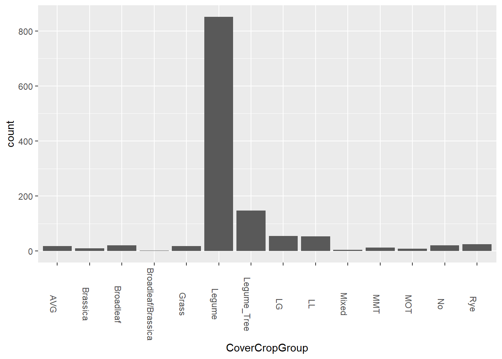
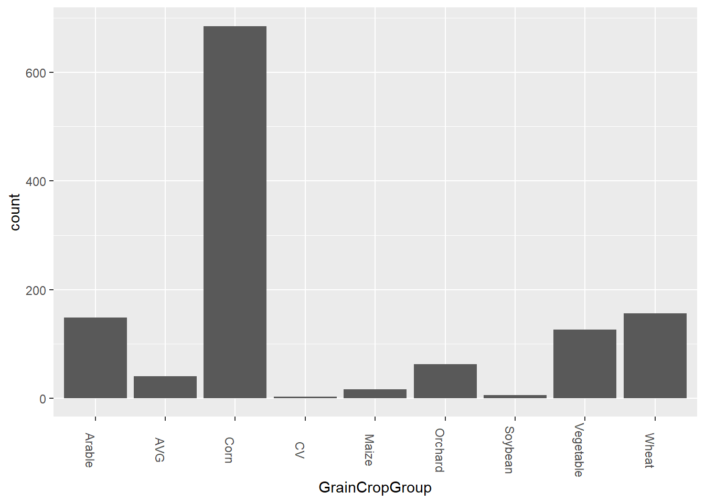
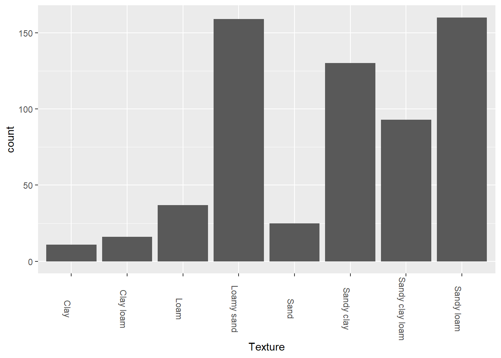
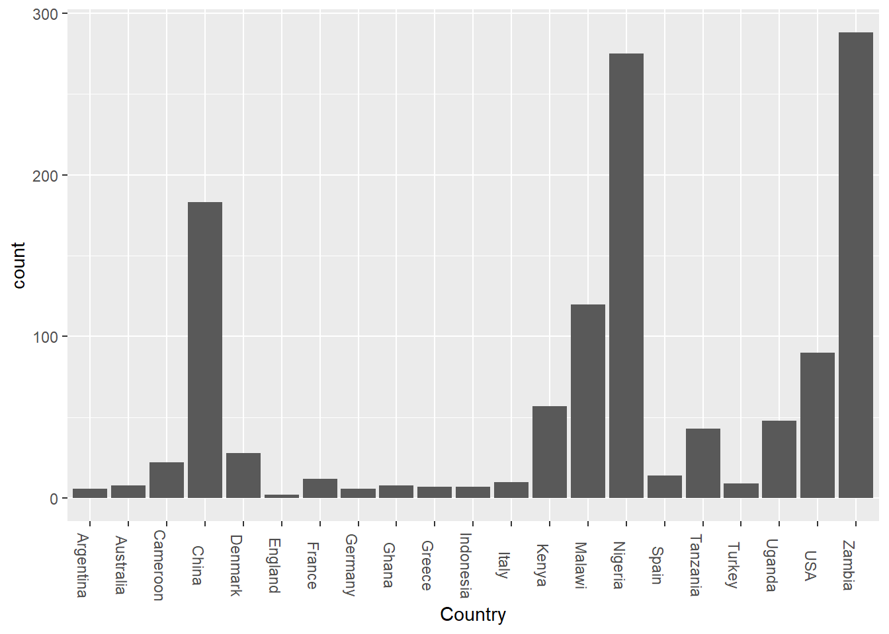
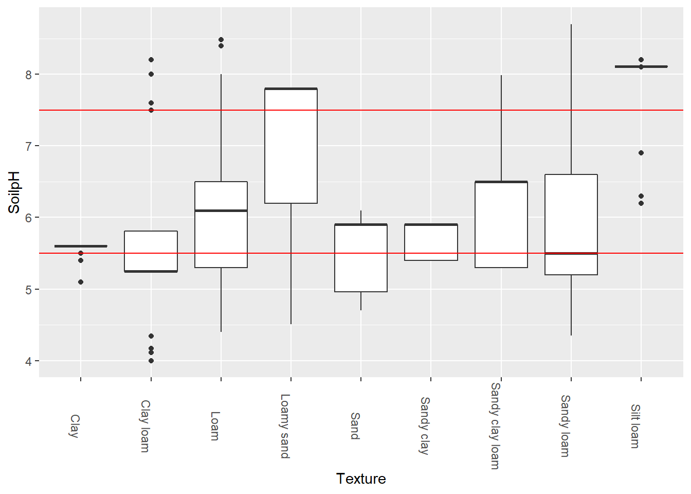

library(tidyverse)
library(ggplot2)
knitr::opts_chunk$set(echo = TRUE, warning=FALSE, message=FALSE)Final Project Vertical Farming
Introduction
For my final project, I will be looking at data related to soil health. This data will involve studying observations from numerous studies, and interpreting how the quality of soil has changed over the years.
Reading in the data
To know where and how to grow your crops is to understand the nutrients your crops require. This includes how much water the soil can absorb, the composition or texture of the soil, pests, etc. For this project, we’ll be focusing in on the types of soil and crops each of these samples use, and how each factor affects the health of the soil.
SoilHealth <- read_csv("_data/SoilHealthDB_V0.csv", show_col_types = FALSE)
SoilHealth# A tibble: 5,241 x 273
StudyID ExperimentID Author_F Autho~1 YearP~2 Sampl~3 Journal SiteI~4 Country
<dbl> <lgl> <chr> <chr> <dbl> <dbl> <chr> <chr> <chr>
1 1 NA Abawi G.S. 2000 NA Applie~ New Yo~ USA
2 1 NA Abawi G.S. 2000 NA Applie~ New Yo~ USA
3 1 NA Abawi G.S. 2000 NA Applie~ New Yo~ USA
4 1 NA Abawi G.S. 2000 NA Applie~ New Yo~ USA
5 1 NA Abawi G.S. 2000 NA Applie~ New Yo~ USA
6 1 NA Abawi G.S. 2000 NA Applie~ New Yo~ USA
7 1 NA Abawi G.S. 2000 NA Applie~ New Yo~ USA
8 1 NA Abawi G.S. 2000 NA Applie~ New Yo~ USA
9 1 NA Abawi G.S. 2000 NA Applie~ New Yo~ USA
10 1 NA Abawi G.S. 2000 NA Applie~ New Yo~ USA
# ... with 5,231 more rows, 264 more variables: Latitude <dbl>,
# Longitude <dbl>, Elevation <dbl>, Tannual <dbl>, MAT <dbl>, Pannual <dbl>,
# MAP <dbl>, ClimateType <chr>, TimeAfterCoverCrop <dbl>, Duration <dbl>,
# CC_planting_date <lgl>, CC_termination_date <lgl>, Time_Comments <chr>,
# SamplingDepth <chr>, SamplingThickness <chr>, SoilDepthGroup <lgl>,
# SurfaceSubsurface <lgl>, SoilBD <dbl>, SandPerc <dbl>, SiltPerc <dbl>,
# ClayPerc <dbl>, Texture <chr>, SoilpH <dbl>, BackgroundSOC <dbl>, ...
# i Use `print(n = ...)` to see more rows, and `colnames()` to see all variable namesCleaning
Now, this is a large dataset, and it’ll require a lot of cleaning up in order to obtain the data we need. So, without further ado, let’s get rid of some junk.
SoilHealthFixed <- SoilHealth %>%
select(-contains("Comments") & -contains("Author") & -contains("ClimateType") & -contains("Journal") & -contains("_C") & -contains("NoSubsample") & -contains("BD_T") & -contains("K_") & -contains("pH_T") & -contains("EC_T") & -contains("BS_T") & -contains("Aggre_T") & -contains("Porosity_T") & -contains("SQI") & -contains("_SD") & -contains("Microelement") & -contains("SOC_NaturalVeg")) %>%
filter(!is.na(Country)) %>%
filter(!is.na(CoverCropGroup)) %>%
filter(!is.na(GrainCropGroup)) %>%
filter(!is.na(Texture)) %>%
filter(!is.na(SamplingThickness)) %>%
filter(!is.na(Duration)) %>%
filter(!is.na(SoilpH)) %>%
filter(!is.na(MAP)) %>%
filter(!str_detect(CoverCropGroup, 'Not_available')) %>%
filter(!str_detect(Texture, 'NotAvailable')) %>%
filter(!str_detect(SamplingThickness, 'Not-available')) %>%
mutate(SamplingThickness = as.double(SamplingThickness)) %>%
select_if(~!(all(is.na(.)) | all(. == "")))
SoilHealthFixed# A tibble: 1,243 x 70
StudyID YearP~1 Sampl~2 SiteI~3 Country Latit~4 Longi~5 Eleva~6 Tannual MAT
<dbl> <dbl> <dbl> <chr> <chr> <dbl> <dbl> <dbl> <dbl> <dbl>
1 7 1999 1995 Aurora~ USA 45.2 -123. 48.4 NA NA
2 7 1999 1995 Aurora~ USA 45.2 -123. 48.4 NA NA
3 7 1999 1995 Aurora~ USA 45.2 -123. 48.4 NA NA
4 53 2006 2000 Agricu~ USA 34.0 -83.4 208. NA NA
5 53 2006 2000 Agricu~ USA 34.0 -83.4 208. NA NA
6 53 2006 2000 Agricu~ USA 34.0 -83.4 208. NA NA
7 53 2006 2000 Agricu~ USA 34.0 -83.4 208. NA NA
8 53 2006 2000 Agricu~ USA 34.0 -83.4 208. NA NA
9 53 2006 2000 Agricu~ USA 34.0 -83.4 208. NA NA
10 53 2006 2000 Agricu~ USA 34.0 -83.4 208. NA NA
# ... with 1,233 more rows, 60 more variables: Pannual <dbl>, MAP <dbl>,
# TimeAfterCoverCrop <dbl>, Duration <dbl>, SamplingDepth <chr>,
# SamplingThickness <dbl>, SoilBD <dbl>, SandPerc <dbl>, SiltPerc <dbl>,
# ClayPerc <dbl>, Texture <chr>, SoilpH <dbl>, BackgroundSOC <dbl>,
# SoilKsat <dbl>, SoilFamily <chr>, CoverCrop <chr>, CoverCropGroup <chr>,
# GrainCrop <chr>, GrainCropGroup <chr>, Rotation_T <chr>,
# Rotation_Diff <chr>, Tillage_T <chr>, Tillage_Top_T <chr>, ...
# i Use `print(n = ...)` to see more rows, and `colnames()` to see all variable namesVisualizations
Alright, now, let’s take a look at some bar graphs to see how each of these samples differ. Let’s start with the crop cover groups that our soil has.
SoilHealthFixed %>%
ggplot(aes(x = CoverCropGroup)) +
geom_bar() +
theme(axis.text.x = element_text(angle = 270))
As we can see here, the full majority of cover crops are within the legume group. What we can also see here are that there are categories that represent more than one group. For example, many of the samples within the Legume group are vetch. Some of the LG samples grow a combination of vetch and oats, which are in the grass group. LB groups contain vetch and canola, which is part of the brassica group. AVG is an “average of vetch and rye”. I believe MMT and MOT are also a mix of legumes and other plants, with MOT implying “this OR that”. It’s not exactly clear yet, but moving on.
SoilHealthFixed %>%
ggplot(aes(x = GrainCropGroup)) +
geom_bar() +
theme(axis.text.x = element_text(angle = 270))
Again, we see that there are some variables which represent multiple groups. AVG represents an average amount of grain crops, and CV represents both corn and vegetables.
From what we see here, corn is a very common crop. A lot of this might have to do with the high demand for corn in more than just food. Corn is often used for feeding livestock, industrial oils, and ethanol production, which is why we see so many cornfields across the country.
SoilHealthFixed %>%
ggplot(aes(x = Texture)) +
geom_bar() +
theme(axis.text.x = element_text(angle = 270))
The majority of the samples taken in this study were sandy loam or loamy sand. Loam is a mix of the three soil compositions, sand, silt and clay, where sand is the largest soil texture and clay is the smallest and most dense texture. Water passes through sand more easily, while clay is less
Now let’s take a look at which soil textures are most common with legumes AND corn.
SoilHealthFixed %>%
filter(str_detect(CoverCropGroup, 'Legume')) %>%
filter(str_detect(GrainCropGroup, 'Corn')) %>%
ggplot(aes(x = Texture)) +
geom_bar() +
theme(axis.text.x = element_text(angle = 270))
So, here we notice that most environments where they grow both legumes and corn are in sandy loam, or loamy sand. This could indicate that both plants tend to grow in environments where water is more easily absorbed by the soil.
Let’s take a look at where these samples were studied too.
SoilHealthFixed %>%
ggplot(aes(x = Country)) +
geom_bar() +
theme(axis.text.x = element_text(angle = 270))
So, apparently, while I was breaking down the data and cleaning it bit by bit to figure out what I needed here, I noticed that the US column kept getting smaller and smaller. While the untidy dataset consists mainly of US data, a good chunk of that data is incomplete, so every time I updated the chart, the bar for the USA kept shrinking and shrinking until finally, I reached a point where the US data is no longer the majority. This shows that while the US has more entries, countries like Zambia, Nigeria and China have more complete entries.
But this doesn’t give us a very useful idea of where everything is - let’s take a look at an actual map.
library(maps)
map(database = "world")
points(x = SoilHealthFixed$Longitude, y = SoilHealthFixed$Latitude, col = "Red")
So, as we could see here, a full majority of the samples were more widely distributed throughout Africa and Europe.
Distribution of samples
SoilHealthFixed %>%
#filter(!is.na(SoilpH)) %>%
#filter(!is.na(Texture)) %>%
#filter(str_detect(CoverCropGroup, 'Rye')) %>%
#filter(str_detect(Country, 'USA')) %>%
#filter(!str_detect(CoverCropGroup, 'Not_available')) %>%
ggplot(aes(Texture, SoilpH)) +
geom_boxplot() +
geom_hline(yintercept = 5.5, color = "red") +
geom_hline(yintercept = 7.5, color = "red") +
theme(axis.text.x = element_text(angle = 270))
Between the two red lines are the pH levels for healthy soils. As we can see here, the median sample pH did not fall within the recommended levels for clay loam, loamy sand, or silt loam.
Now, let’s see what might affect the soil’s pH levels. Let’s start by looking at how the pH differs with mean annual precipitation (MAP).
SoilHealthFixed %>%
ggplot(aes(SoilpH, MAP)) +
geom_point() +
geom_smooth(method = lm) #geom_hline(yintercept = 5.5, color = "red") +
#geom_hline(yintercept = 7.5, color = "red") +
#theme(axis.text.x = element_text(angle = 270))Indeed there is a negative relationship with soil pH and mean annual precipitation. Wetter climates appear to lead to more acidic soils, while drier climates have more basic soils.
Conclusions
What this data tells us is that sandy loam and loamy sand are most the commonly used soils for farming, perhaps due to its mixed properties. Soils that have just the right amount of mean annual precipitation tend to be healthier. While the data was very informative, better calculations need to be taken in order to better understand the health of our soil. Further research could be done regarding the quality of soil samples.
Works cited
Jian, Jinshi, et al. “A Database for Global Soil Health Assessment.” Scientific Data, vol. 7, no. 1, Jan. 2020, p. 16, https://doi.org/10.1038/s41597-020-0356-3.